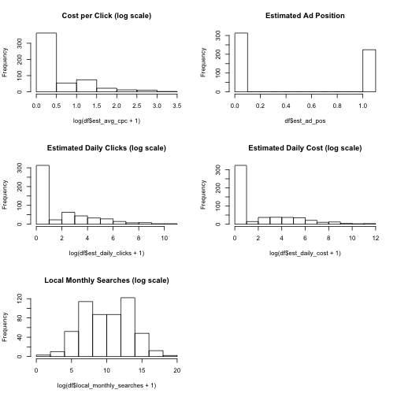

Search engines allow advertisers to bid on keywords and groups of keywords. Some of these search terms are more expensive than others. Some terms are submitted more often than others.
What are the most cost-effective keywords on which to bid?
Search engines allow advertisers to bid on keywords and groups of keywords. Some of these search terms are more expensive than others. Some terms are submitted more often than others.
What are the most cost-effective keywords on which to bid?
Notice the skewed distribution of continuous variables.
summary( df[ , 2:length( df ) ] )
## global_monthly_searches est_avg_cpc est_ad_pos est_daily_clicks
## Min. :5.80e+01 Min. : 0.00 Min. :0.000 Min. : 0
## 1st Qu.:4.40e+03 1st Qu.: 0.00 1st Qu.:0.000 1st Qu.: 0
## Median :4.95e+04 Median : 0.00 Median :0.000 Median : 0
## Mean :1.05e+07 Mean : 1.26 Mean :0.438 Mean : 338
## 3rd Qu.:1.00e+06 3rd Qu.: 1.21 3rd Qu.:1.050 3rd Qu.: 22
## Max. :3.76e+09 Max. :27.19 Max. :1.060 Max. :52064
## est_daily_cost local_monthly_searches
## Min. : 0 Min. :0.00e+00
## 1st Qu.: 0 1st Qu.:1.90e+03
## Median : 0 Median :2.22e+04
## Mean : 912 Mean :1.59e+06
## 3rd Qu.: 38 3rd Qu.:3.68e+05
## Max. :137734 Max. :3.38e+08

Because the search frequencies do not follow the same distribution as cost there may be undervalued search terms. This application will help identify those segments.
https://macasaet.shinyapps.io/developing-data-products_pitch/